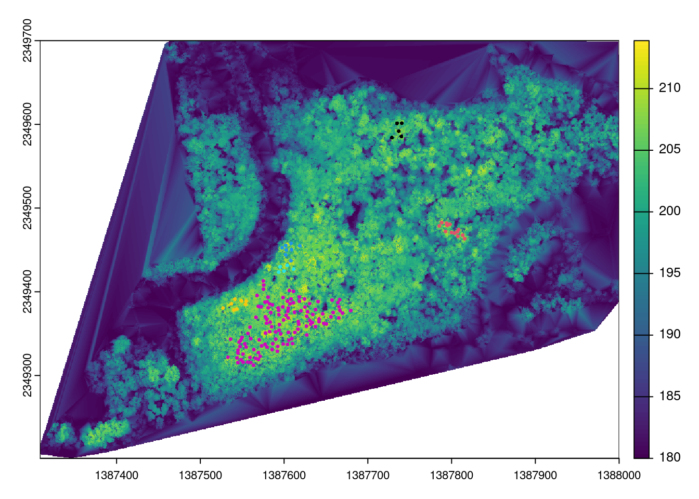

library("sf")
library("terra")
library("lidR")
library("raster")
library("dbscan")
library("tidyverse")
library("leaflet")
library("RColorBrewer")
library("rgl")Letchworth Learning Forest Structure Modeling Utilizing LiDAR Point Cloud Data
Understanding forest structure and characteristics in Letchworth Learning Forest
Introduction
Forest structure plays a critical role in maintaining biodiversity and supporting ecosystem services (MacKinnon, 2012). However, measuring forest structure through traditional field data collection is challenging due to time and funding constraints, particularly in large forests. The introduction of remote sensing has been a key driver in obtaining large forest structure data indirectly, while lessening the burden of time and funding limitations (Wulder et al., 2012). In this project, I utilized publicly available remote sensing data to answer a few questions about the study area’s forest structure.
These questions include: 1. What is the approximate tree population? 2. Where are the locations of individual trees? 3. What is the distribution of tree heights in the study site? 4. Where are the 90% percentile of tallest trees located? 5. Is there spatial clustering of tall trees?
Materials and methods
This project utilizes the most recent (2019) remote sensing LiDAR point-cloud data to measure vertical forest structure within the Letchworth Learning Forest near the Ellicott Complex. The LiDAR point-cloud data is horizontally projected in NAD 83 (2011) and vertically measured in meters. In order to address the project’s questions and goals, Z-values from the point cloud data were filtered and manipulated to find individual trees, tree heights, and spatial clustering of the tallest trees within the study area.
The spatial point data was later transformed into WSG 84 in order to project the tree locations and spatial clustering onto a leaflet map. The critical r packages that were utilized included:
LidR (html to package website) Leaflet (html to package website) dbscan (html to package website)
Here’s my current on-going code.
Load Nessassary Packages
Load USGS Lidar Point Cloud Data of Letchworth Learning Forest
las <- readLAS("data/Letchworth_Teaching_Forest_Lidar.laz")
## Look at the parameter coordinates of original data
original_bbox <- st_bbox(las)
original_bbox xmin ymin xmax ymax
1387000 2349000 1388000 2350000 Create New Bounding Box Filter Out Non-Forest
polygon_coords <- matrix(c(
1388000, 2349355, #right bottom corner
1388000, 2349700, #right top corner
1387450, 2349700, #mid top corner
1387450, 2349450, #mid mid corner
1387300, 2349200, #left bottom corner
1387350, 2349200, #mid bottom corner
1388000, 2349355 #right bottom corner
), ncol = 2, byrow = TRUE)
## Bounding Box has been given CRS associated with las-CRS
polygon_sf <- st_sfc(st_polygon(list(polygon_coords)), crs = st_crs(las))las_clipped <- lidR::clip_roi(las, polygon_sf)
## Check if the crs is still the same
st_crs(polygon_sf) == st_crs(las)
## Filter out any OUTliers z-values from las
filterOUT_las <- filter_poi(las_clipped, Z >= 180, Z <= 220)# plot(filterOUT_las)
# play3d(spin3d( axis = c(0, 0, 1), rpm = 2,dev = cur3d()),startTime = 0, duration = 10 )
# movie3d(spin3d(axis = c(0, 0, 1), rpm = 2,), duration = 5, movie = "data/lidar")
knitr::include_graphics("data/Letch.gif", error = FALSE)
Check If New Data Will Correctly Transform to Leaflet Projection (The original data uses NAD 83 (2011) and Leaflet uses WGS 84)
## Reproject the las to 4326 for Leaflet
options(digits = 15)
las84 <- st_as_sf(las_clipped, coords = c("X", "Y"), crs = 26918) # crs was NAD83(2011)
las84 <- st_transform(las_clipped, crs = 4326)
## Create a dataframe of points lat and long to check if st_transform worked
las_df <- data.frame(lat = st_coordinates(las84)[, 2],
long = st_coordinates(las84)[, 1])
unique(las_df$lat)[1] 43.005 43.006 43.007 43.009 43.008unique(las_df$long) [1] -78.797 -78.796 -78.795 -78.794 -78.793 -78.792 -78.791 -78.790 -78.789
[10] -78.788 -78.787Rasterize LiDAR Data to Identify Tree Tops, Identify the Tree Population, Create a Data Set of the 90th Percentile of Trees Based On Height (Tallest Trees) (Height is in Meters)
## LidR functions to find individual trees
chm <- rasterize_canopy(filterOUT_las, 0.25, pitfree(subcircle = 1))
tree_tops <- locate_trees(chm, lmf (ws=5))
filtered_tree_tops <- tree_tops %>%
filter(Z >= 185)
#plot(chm, col = height.colors(50))
#plot(sf::st_geometry(filtered_tree_tops), pch = 3)
#plot(sf::st_geometry(filtered_tree_tops), add = TRUE, pch = 3)
nintypercent <- quantile(filtered_tree_tops$Z, 0.90)
tall_trees <- filtered_tree_tops[filtered_tree_tops$Z > nintypercent,]
coords <- st_coordinates(tall_trees)The Tree Height Distribution within the Forest
tree_Z <- as.data.frame(filtered_tree_tops$Z)
colnames(tree_Z) <- c("height")
test <- tree_Z$height - 180
test <- as.data.frame(test)
max(test)[1] 33.901tall_trees_height <- as.data.frame(tall_trees$Z - 180)
colnames(tall_trees_height) <- c("height")
## in meters
ggplot()+
geom_histogram(data = test, aes(x = test), binwidth = 0.5,, color = "black", fill="green", alpha = 0.25)+
geom_histogram(data = tall_trees_height, aes(x = height), binwidth = 0.5,, color = "black", fill="red", alpha = .5)+
geom_vline(aes(xintercept = mean(test$test)), color="blue", linetype="dashed", linewidth=1)+
theme_classic()+
labs(title = "Distribution of Tree Heights in Meters", x = "Height (m)", y = "Frequency",
subtitle = "Mean of all heights (Blue) \n90% of tallest trees (Red)",
caption = "Letchworth Teaching Forest (2019)")
Locate the Tallest Trees, and Tree Tops within the Forest
knitr::opts_chunk$set(global.device = TRUE)
plot(chm, main = "Tree Tops")
plot(filtered_tree_tops[2],pch = 16, cex = .5, main = "tree_tops", add = TRUE)
plot(chm, main = "Tall Trees")
plot(tall_trees, pch = 16, cex = .5, main = "tall_trees", add = TRUE)
Locate Spatial Clustering of Tall Trees
knitr::opts_chunk$set(global.device = TRUE)
dbscan_result <- dbscan(coords, eps = 12, minPts = 5)
tall_trees$dbscan_cluster <- as.factor(dbscan_result$cluster)
colorsize = length (unique (tall_trees$dbscan_cluster))
## Filter out first cluster
cluster <- tall_trees %>%
filter(dbscan_cluster != 0)
plot(chm)
plot(cluster[3], pch = 16, cex = .5, col = factor(cluster$dbscan_cluster), main = "Tree Clusters", add = TRUE)
Add Locations of Spatail Clustering to Leaflet Map
pal <- colorFactor(brewer.pal(4, "Set1"), domain = tall_trees$dbscan_cluster)
st_tall_trees <- st_transform(tall_trees, crs = 4326)
st_tall_trees_filtered <- st_tall_trees %>%
filter(dbscan_cluster != 0)
st_tall_trees_filtered$Z <- st_tall_trees_filtered$Z - 180
leaflet (st_tall_trees_filtered) %>%
setView(lng = -78.793, lat = 43.007, zoom = 13) %>%
addTiles() %>%
addCircleMarkers(
radius = 2,
color = ~pal(dbscan_cluster),
popup = ~paste("Tree ID:", treeID, "<br> Height (m):", Z))Load any required packages in a code chunk (you may need to install some packages):
install.packages("sf")
install.packages("terra")
install.packages("lidR")
install.packages("raster")
install.packages("dbscan")
install.packages("tidyverse")
install.packages("leaflet")
install.packages("RColorBrewer")
install.packages("knitr")
install.packages("rgl")Conclusions
[~200 words] apa format Clear summary adequately describing the results and putting them in context. Discussion of further questions and ways to continue investigation.
References
All sources are cited in a consistent manner